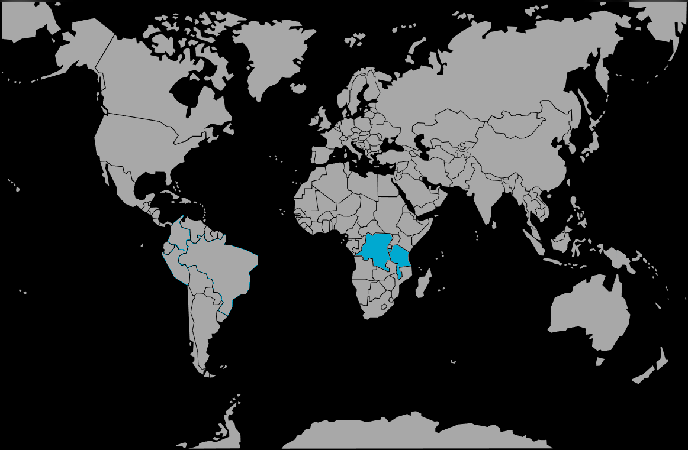

Systématique
- Ordre : Cichliformes
- Famille : Cichlidae
- Sous-famille : Pseudocrenilabrinae
- Genre : Neolamprologus
- Espèce : Neolamprologus pulcher
Neolamprologus pulcher est un cichlidé rupicole du lac Tanganyika, connu pour sa livrée jaune à beige et son comportement social très développé.
Les adultes mesurent environ 8–10 cm et vivent en groupes hiérarchisés, formant des colonies familiales coordonnées autour d’un territoire rocheux.
L’espèce vit en colonies où plusieurs générations cohabitent, les jeunes plus âgés aidant le couple dominant à défendre le territoire et à élever les nouvelles pontes.
En aquarium, ce mode de vie coopératif entraîne une forte territorialité autour des grottes et failles rocheuses, nécessitant un décor très structuré pour limiter les conflits.
Reproduction : ovipare, ponte sur substrat caché dans les cavités rocheuses ; les parents, souvent aidés par des subadultes, gardent activement les œufs puis les jeunes.
Les alevins restent au cœur de la colonie et bénéficient de la protection collective, ce qui permet d’observer de nombreuses interactions sociales si le groupe est bien établi.
Dimorphisme sexuel : peu marqué ; mâles plus grands et légèrement plus allongés, femelles plus trapues, les différences devenant surtout visibles dans un groupe adulte.
Biotope : zones rocheuses du littoral du Tanganyika, sur substrat sableux avec amas de pierres, dans une eau claire, dure et fortement alcaline.
Répartition
Origine naturelle :
- Lac Tanganyika (Afrique de l’Est), notamment côtes zambiennes et tanzaniennes.
- Biotopes rocheux proches des rives, à faible profondeur.
L’espèce occupe des zones très structurées, riches en anfractuosités servant de refuges, de points d’observation et de sites de ponte pour les colonies.
Paramètres de maintenance
Température : 24 à 27 °C.
pH : 8,0 à 9,0, eau fortement alcaline.
GH : 10 à 20 °dGH, eau dure, avec KH élevé pour la stabilité.
Courant : léger à modéré, avec bonne filtration et oxygénation.
Volume conseillé : ≥ 200–250 L pour un groupe de 4–6 individus avec décor rocheux élaboré.
Régime alimentaire
Régime : omnivore à tendance carnivore ; accepte granulés et paillettes riches en protéines, ainsi que nourriture congelée et vivante de petite taille.
Une alimentation variée de bonne qualité, distribuée en plusieurs petits repas, aide à maintenir les couleurs, la vitalité et la cohésion du groupe tout en évitant la surcharge organique.